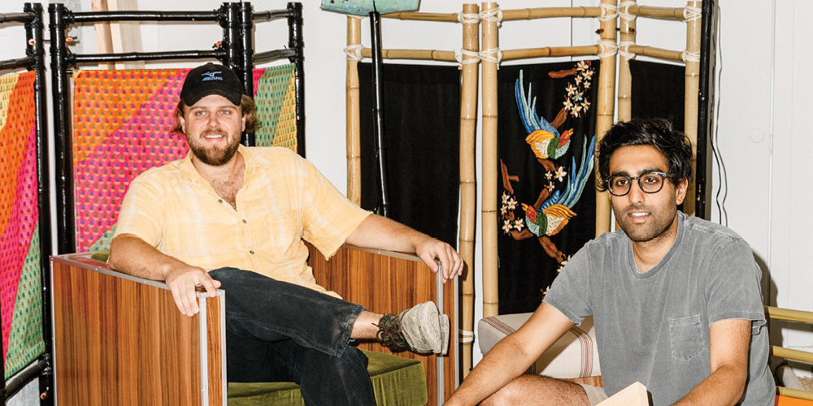
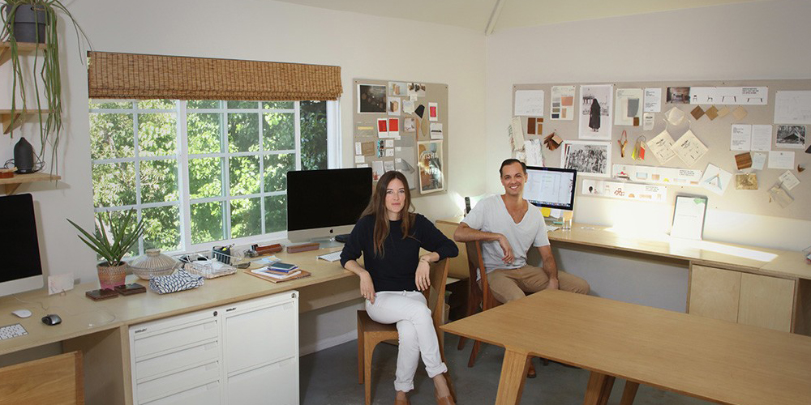
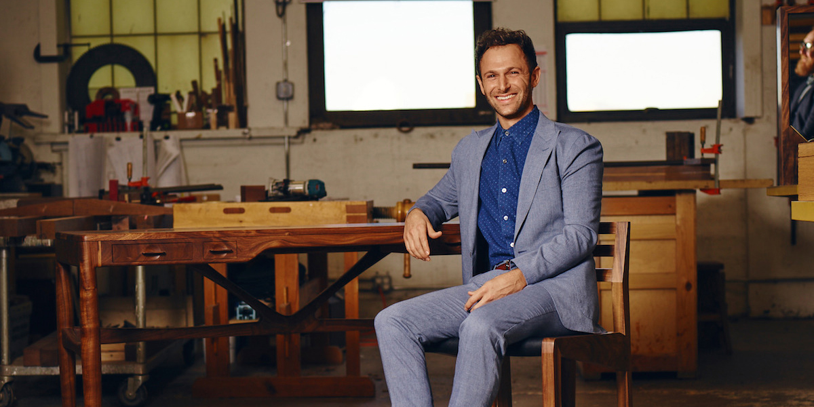

ARTISTS

GREEN RIVER PROJECT
Founded in 2017 by Aaron Aujla and Benjamin Bloomstein, Green River Project LLC’s research-based approach to building furniture and interiors has been shaped by 10 years of studio practice as artists in New York City. Along with private commissions for residential interiors, every year Green River Project LLC produces four collections of furniture and sculptural objects centered around a unique narrative.
LEARN MORE

KALON
Since the beginning, Kalon has held a deep commitment to sustainable, US based production, and each piece is made by a small team of highly skilled traditional craftspeople in New England using timber sourced from local, sustainably managed forests and the highest quality sustainable finishes and materials. Kalon’s intent is that the user will keep the product for a lifetime and that the piece will adapt to the user’s ever-changing needs and tastes.
LEARN MORE
